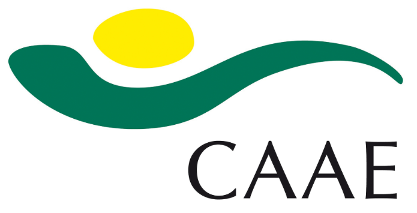
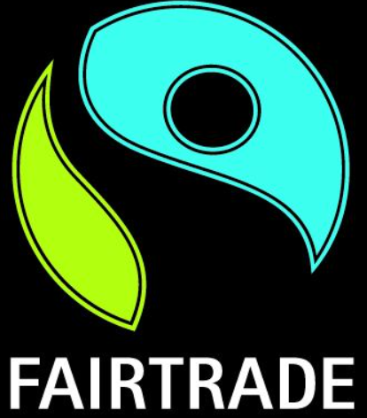

Paso 2: Los comercios locales
Las etiquetas
Ya hemos analizado las ventajas que tiene el consumo de productos ecológicos y locales así que antes de hacer vuestra lista de compras, vais a conocer lo que significan algunas etiquetas relacionadas con la compra y venta de productos. Aquí tienes algunos ejemplos:
- La certificación CAAE la puedes encontrar en los productos procedentes de agricultura ecológica en Andalucía.
- La Eurohoja es otra etiqueta que identifica a los productos originarios de los países de la Unión Europea que se han producido con métodos sostenibles y ecológicos.
- Las etiquetas de comercio justo (Fairtrade) garantizan una serie de requisitos mínimos a nivel internacional en todos los productos. Exige el respeto de los Derechos Humanos en el proceso de elaboración de los productos, así como el cuidado del medio ambiente.

Puedes investigar más sobre estas etiquetas en función de los productos que decidáis comprar.
Comercios de nuestra localidad
Una vez analizados los datos obtenidos de nuestra encuesta cada grupo deberá investigar sobre los productos a comprar en los distintos comercios de nuestra localidad examinando el precio de cada producto y las posibles ofertas que os podáis encontrar. Puede resultaros de utilidad usar una tabla como la siguiente que podéis incluir en Google Doc,
| PRODUCTO | MEJOR OFERTA | COMERCIO |

Obra publicada con Licencia Creative Commons Reconocimiento Compartir igual 4.0